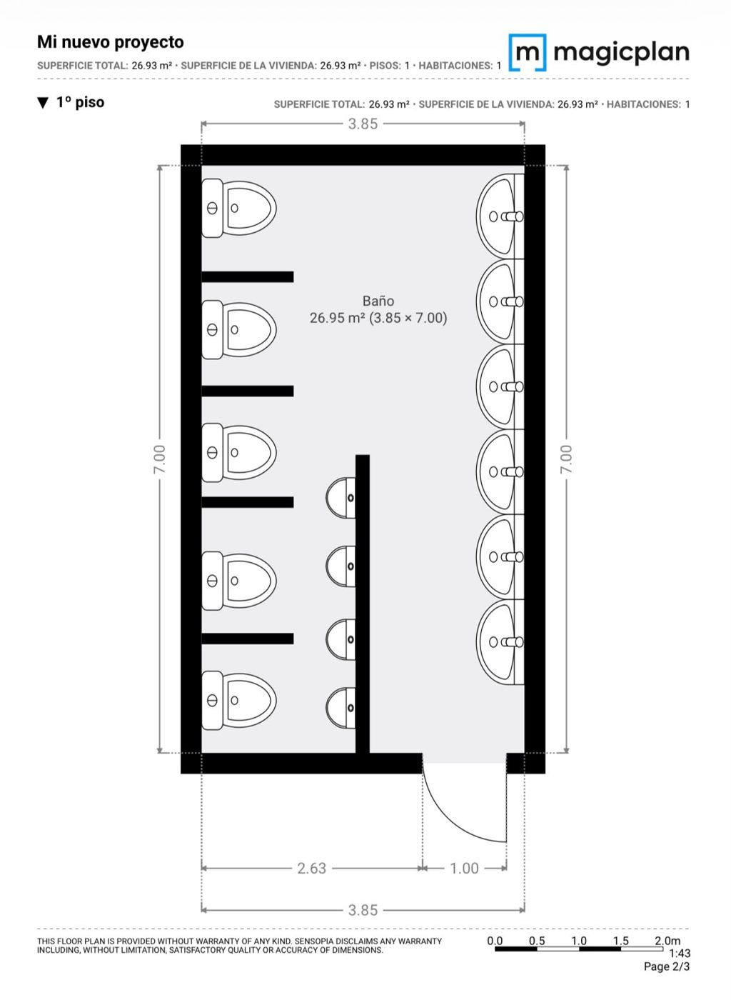
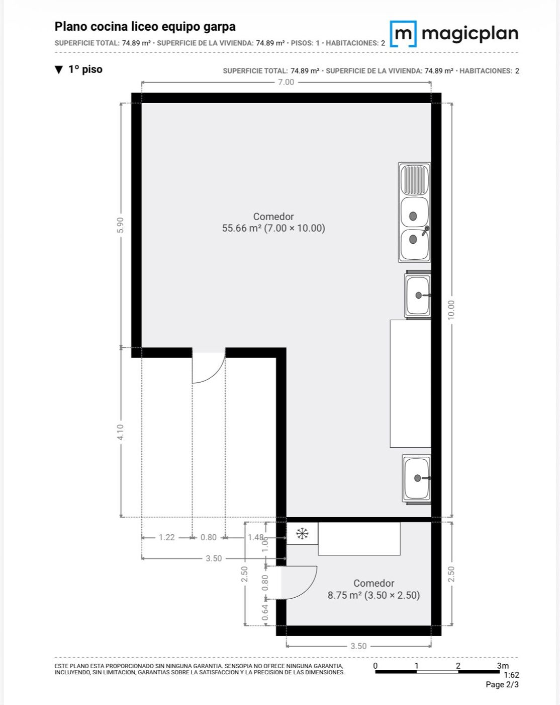
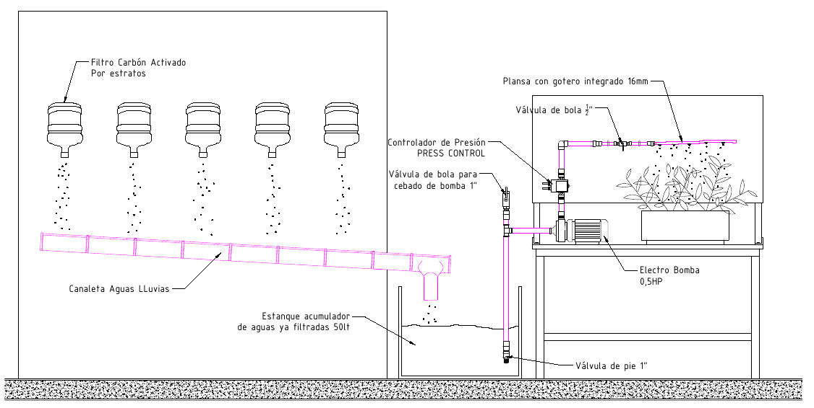

ENCUENTRO DE CIERRE · ENCONTRO DE ENCERRAMENTO
PROYECTO COIL PROCIN 2026 / PROJETO COIL PROCIN 2026
Uso y Cuidado del Agua: Del Diagnóstico a la Acción
Uso e Cuidado da Água: Do Diagnóstico à Ação
Intercambio Académico Chile – Brasil
Prof. Cristóbal Zamora Durán · Escuela Industrial GRC, San Felipe | Prof. Adilson Rodrigues Camacho · Etec 154
Objetivo Central
Concientizar sobre el uso del agua en establecimientos educacionales, transformando el entorno escolar en un laboratorio vivo de sustentabilidad.
Objetivo Central
Conscientizar sobre o uso da água em estabelecimentos de ensino, transformando o ambiente escolar em um laboratório vivo de sustentabilidade.
MedirMedir
AuditarAuditar
RediseñarRedesenhar
Los estudiantes no solo leen sobre la crisis: miden, auditan y rediseñan su propia escuela.
Dos Realidades, Un Mismo DesafíoDuas Realidades, Um Mesmo Desafio
Chile · La Escasez
Mega sequía históricaMegasseca histórica
Retroceso acelerado de glaciaresRecuo acelerado das geleiras
Necesidad de optimizar el recurso en escuelasNecessidade de otimizar o recurso nas escolas
43Escuela Industrial GRC, San Felipe
2° Medio E · estudiantes en rotación por especialidades · taller de Instalaciones Sanitarias
2° Medio E · estudiantes en rotación por especialidades · taller de Instalaciones Sanitarias
Un mismo recursoUm mesmo recurso
Brasil · Abundância Desafiada
Grandes reservas (Amazonia, Acuífero Guaraní)Grandes reservas (Amazônia, Aquífero Guarani)
Severos desafíos de distribuciónSeveros desafios de distribuição
Contaminación de cuerpos de agua urbanosContaminação de corpos d'água urbanos
Etec 154 · Centro Paula Souza
1ª série, Turma A · Ensino Médio com itinerário de Ciências Humanas e Sociais Aplicadas
1ª série, Turma A · Ensino Médio com itinerário de Ciências Humanas e Sociais Aplicadas
Arquitectura de la Experiencia: Cómo la VivimosComo a Vivemos
Calendario de Trabajo: Planificado vs EjecutadoCalendário de Trabalho: Planejado vs Executado
Planificado · PlanejadoEjecutado · ExecutadoCierre · Encerramento
Desarrollo Técnico I: Auditoría HídricaDesenvolvimento Técnico I: Auditoria Hídrica
Cuantificamos artefactos sanitarios y puntos de consumo de agua en cuatro zonas de la escuela.Quantificamos aparelhos sanitários e pontos de consumo de água em quatro áreas da escola.
Levantamiento Técnico: Del Terreno al PlanoLevantamento Técnico: Do Campo à Planta

Baño de alumnos · Banheiro

Cocina · Cozinha
Medición en terrenoMedição em campo
Plano de emplazamiento y ubicación de artefactosPlanta de localização dos aparelhos
Identificar dónde intervenir para optimizar el consumoIdentificar onde intervir para otimizar o consumo
Desarrollo Técnico II: InfiltraciónDesenvolvimento Técnico II: Infiltração
PrecipitaciónPrecipitação
Infiltración: entra por los poros del sueloInfiltração: entra pelos poros do solo
Percolación: desciende por gravedadPercolação: desce por gravidade
Filtración natural: el suelo retiene partículasFiltração natural: o solo retém partículas
Recarga de la napa subterráneaRecarga do lençol freático
≠
Filtración natural no significa agua potableFiltração natural não significa água potável
Proyecto Práctico: Filtro de EstratosProjeto Prático: Filtro de Camadas
Montaje: desde la salida hacia arriba.
Montagem: da saída para cima.
Prueba: agua de ensayo con tierra limpia, nunca aguas servidas.
Montagem: da saída para cima.
Prueba: agua de ensayo con tierra limpia, nunca aguas servidas.
Desarrollo Técnico III: Medir el CaudalDesenvolvimento Técnico III: Medir a Vazão
Calculadora de caudalCalculadora de vazão
Q = V / t =
Volumen de entrada · Volume de entrada
Volumen recuperado · Volume recuperado
Tiempo · Tempo
Aspecto del agua · Aspecto da água
Ejemplo inicial: 4 L en 2 min (no es un resultado medido) · Exemplo, não é um resultado medido
Desarrollo Técnico IV: ReutilizaciónDesenvolvimento Técnico IV: Reúso da Água

Diagnóstico: la auditoría mostró dónde se usa el agua en la escuela.Diagnóstico: a auditoria mostrou onde a água é usada.
Solución: filtrar por estratos y reutilizar el agua en riego por goteo.Solução: filtrar por camadas e reutilizar a água na irrigação.
Módulo demostrativo: el agua filtrada no es potable.Módulo demonstrativo: a água filtrada não é potável.
5 filtros por estratos5 filtros por camadas
›
Estanque 50 LReservatório 50 L
›
Bomba 0,5 HP + press controlBomba + pressostato
›
Riego goteo 16 mmGotejamento 16 mm
Lo que Logramos en CifrasO que Conquistamos em Números
2
países trabajando juntospaíses trabalhando juntos
43
estudiantes chilenos de 2° Medio Eestudantes chilenos
4
zonas de la escuela auditadasáreas da escola auditadas
2
planos técnicos levantadosplantas técnicas
6
capas en nuestro filtrocamadas no nosso filtro
1
módulo de reutilización diseñadomódulo de reúso projetado
Técnico
Auditoría, planos, filtro y caudal
Intercultural
Aulas conjuntas y dos idiomas
Digital
Teams, Padlet y Drive compartido
Desafíos y Cómo los EnfrentamosDesafios e Como os Enfrentamos
clic para voltear · clique para virar
DESAFÍO · DESAFIO
Problemas de conexión en la primera aula conjuntaProblemas de conexão na primeira aula conjunta
SOLUCIÓN · SOLUÇÃO
Reprogramamos (26/08 → 02/09) y reforzamos el trabajo en Padlet y DriveReagendamos e reforçamos o trabalho no Padlet e no Drive
DESAFÍO · DESAFIO
Calendarios escolares distintos en Chile y BrasilCalendários escolares diferentes
SOLUCIÓN · SOLUÇÃO
Reuniones docentes antes de cada aula conjunta para ajustar fechasReuniões entre professores antes de cada aula conjunta
DESAFÍO · DESAFIO
Dos idiomas en un mismo proyectoDois idiomas em um mesmo projeto
SOLUCIÓN · SOLUÇÃO
Materiales bilingües en todas las presentacionesMateriais bilíngues em todas as apresentações
DESAFÍO · DESAFIO
Fue difícil involucrar a otros funcionarios y colegasFoi difícil envolver outros funcionários e colegas
SOLUCIÓN · SOLUÇÃO
Apoyarnos en el taller de especialidad y en la coordinación entre ambos docentesApoio na oficina de especialidade e coordenação entre os professores
Próximos Pasos y Muro de IdeasPróximos Passos e Mural de Ideias
Balance final entre docentesBalanço final entre os professores
Relato de la experiencia para el E-book PROCIN, Vol. 2Relato da experiência para o E-book PROCIN, Vol. 2
Seguir usando la escuela como laboratorio del aguaContinuar usando a escola como laboratório da água
¡Gracias!Obrigado!
¿Qué harías para cuidar el agua en tu escuela?O que você faria para cuidar da água?
¡Comparte tu idea!Compartilhe sua ideia!
El docente la escribe en el teléfono y elige la bandera del país.